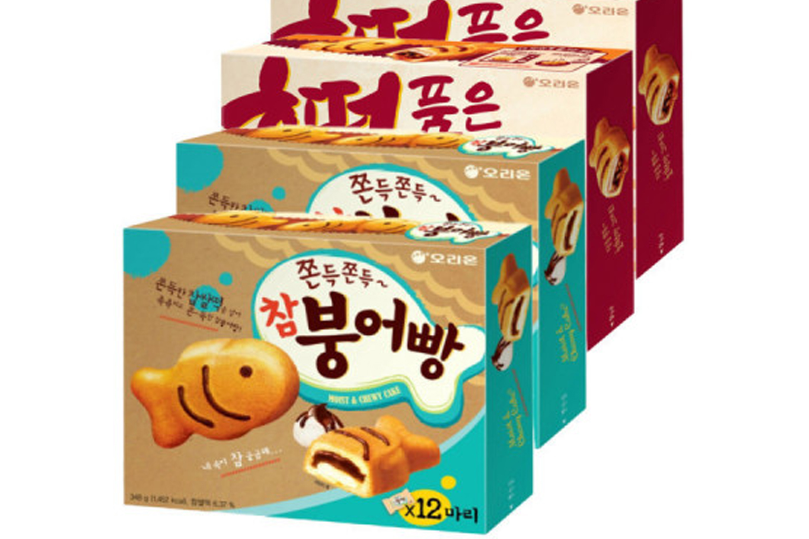

호떡품은 참붕어빵
오리온 호떡품은 참붕어빵 — 붕어빵형 케이크 속에 호떡소(흑당·시나몬·견과)를 넣은 과자.
오리온 ‘참붕어빵’ 라인의 변형으로, 길거리 붕어빵·호떡을 모티브로 한 상온 케이크 과자입니다. 쫀득한 빵(케이크) 속에 흑당·시나몬·아몬드·땅콩 등 호떡소가 들어 있습니다. 길거리 즉석 붕어빵과는 다릅니다.
편의점·마트에서 상자·멀티로 팔립니다. 전자레인지에 잠깐 데우면 속이 더 부드럽게 느껴진다는 안내도 있습니다.
오리온 ‘참붕어빵’ 라인의 변형으로, 길거리 붕어빵·호떡을 모티브로 한 상온 케이크 과자입니다. 쫀득한 빵(케이크) 속에 흑당·시나몬·아몬드·땅콩 등 호떡소가 들어 있습니다. 길거리 즉석 붕어빵과는 다릅니다.
편의점·마트에서 상자·멀티로 팔립니다. 전자레인지에 잠깐 데우면 속이 더 부드럽게 느껴진다는 안내도 있습니다.
사는 팁
구매 팁 패키지 ‘오리온’·‘호떡품은 참붕어빵’ 표기를 확인하세요. 오리지널 참붕어빵과 나란히 진열되는 경우가 많습니다.